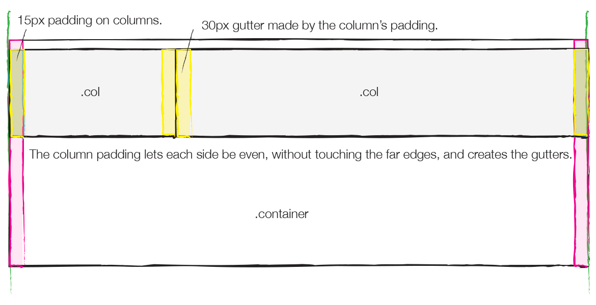
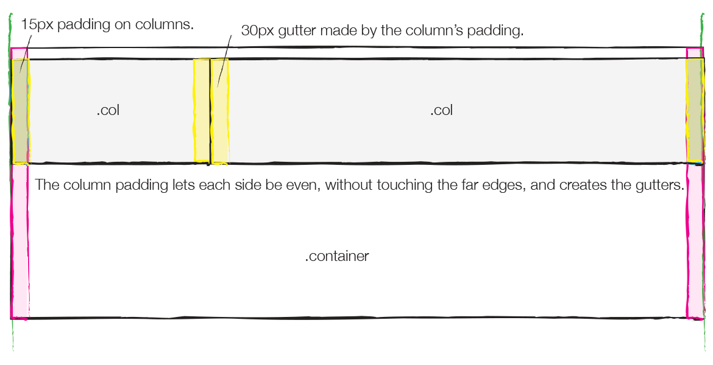

See the Pen different between container ,container-fuild and .container-fuild by Diwas Poudel (@DiwasPoudel) on CodePen.
Note
Container has 15 px padding on both side.
Row has negative margin of 15px ie. equal to padding of container.

 
More....
We can nest column,we can nest row but never nest container.
Extra Small: (Only Mobile Resolution)
Small: 768px (Tablets)
Medium: 992px (Laptops)
Large: 1200px (Laptops/Desktops)

More....
We can nest column,we can nest row but never nest container.
Extra Small: (Only Mobile Resolution)
Small: 768px (Tablets)
Medium: 992px (Laptops)
Large: 1200px (Laptops/Desktops)
The .container class is the fixed width container. That does not mean it is not responsive. It is responsive; however, it is fixed based on screen size. The screen sizes include:
- xs for extra small devices (used for less than 768 e.g smart phones, mobile etc.)
- sm for small screens (From 768 pixels and up e.g. tablets)
- md for the medium screen (>= 992 pixels. Desktops/Laptops)
- lg for large screens (>= 1200. Pixels e.g. large desktops)
If you use the container class and check the webpage in a browser, it will adjust according to the screen and browser size. For example, if your current browser width is more than 1200, it will adjust to the 1170px wide. If you resize the browser to small size, it will remain same until it reaches 992px. At this point, the container class will adjust to 970px wide.
On the other hand, the container-fluid class will take the full width of the viewport. If you use the container-fluid and resize the browser, you may notice the content inside it will adjust with every pixel to take the full available width.
==============================================================================Example
- Has a fixed width,which changes at certain breakpoint
- Has a built-in padding of 15px all the way around
- Has a fluid width, which stretches to 100% of its parent element all the time.
- Donot have 15px padding
Note that : Div without class row or column also take 15px padding or margin